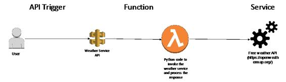

Serverless microservice – sample walkthrough
Now that we have covered the basics of a serverless microservice in AWS, let's do some hands-on exercises with a sample application using multiple AWS services.
So, let's create an actual microservice to retrieve weather information for any location. For this, we will use the following architectural components:
